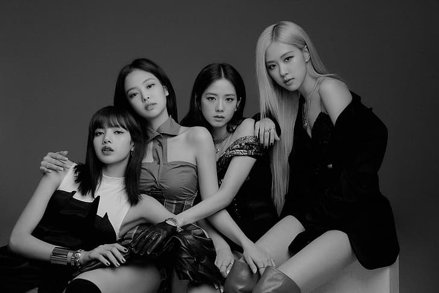
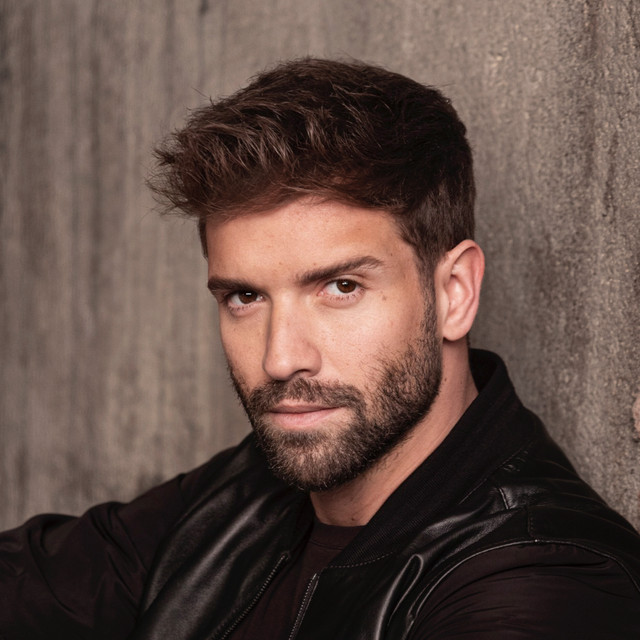

BLACKPINK
Blackpink es un grupo musical femenino surcoreano formado por YG Entertainment.
Está conformado por cuatro miembros: Jisoo, Jennie, Rosé y Lisa.
Mi album favorito de este artitas es THE ALBUM, lanzado en el año 2020, y esta conformado por estas canciones:
- How you like that
- Ice cream ft. Selena Gomez
- Pretty savage
- Bet you wanna
- Lovesick girls
- Sour candy
- Love to hate me
- You never know
|
|

PABLO ALBORÁN
Pablo Alborán, es un cantautor y músico español.
El cantante ha lanzado seis álbumes de estudio, dos álbumes en vivo, treinta y cuatro sencillos,
veintinueve videos musicales y varias colaboraciones musicales. Sus materiales discográficos son distribuidos por Warner Music Group.
Mi album favorito de este artista es PROMETO, lanzado en el año 2017, y esta conformado por estas canciones:
- Prometo
- Boca de hule
- Idiota
- Vivir
- No vaya a ser
- Cuerda al corazon
- Lo nuestro
- Tu refugio
- La llave
- Curo tus labios
- Al paraiso
|